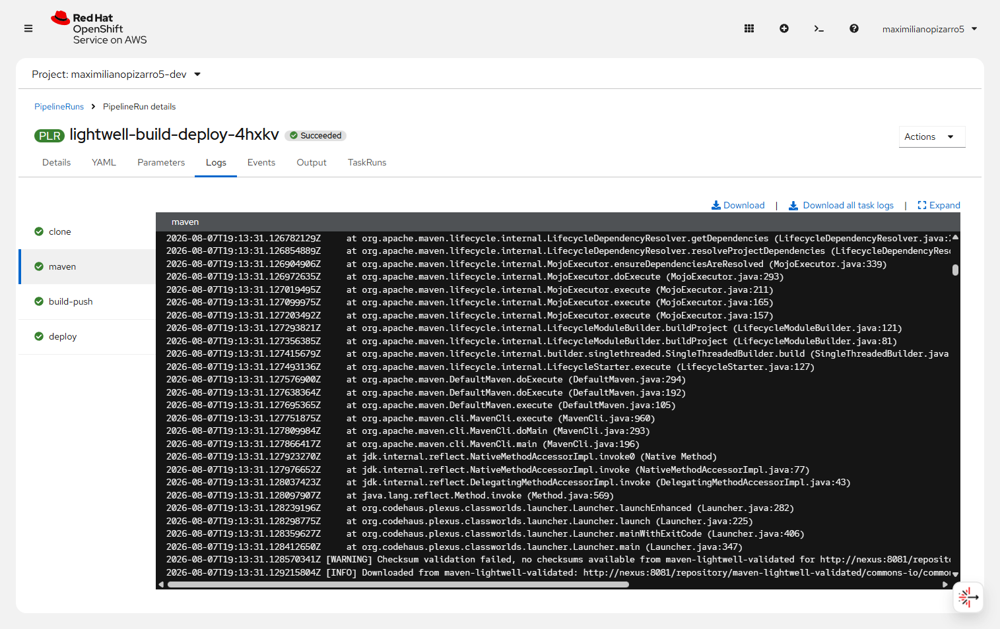
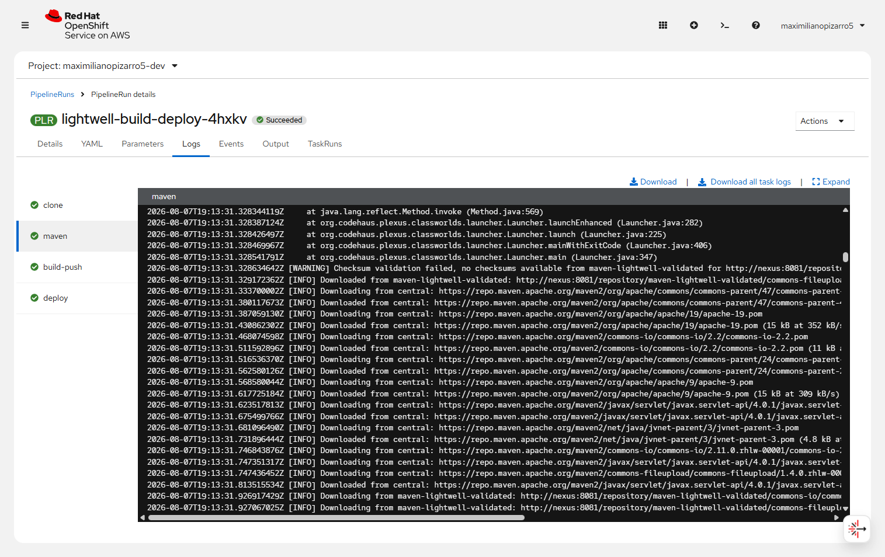
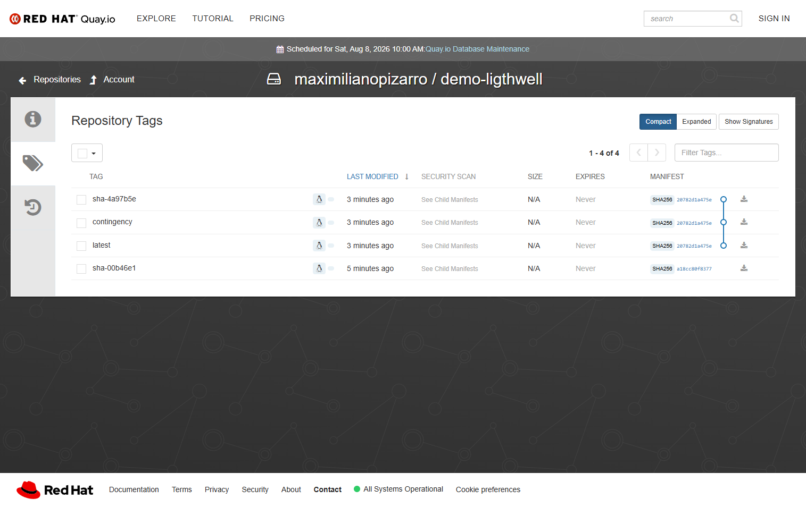
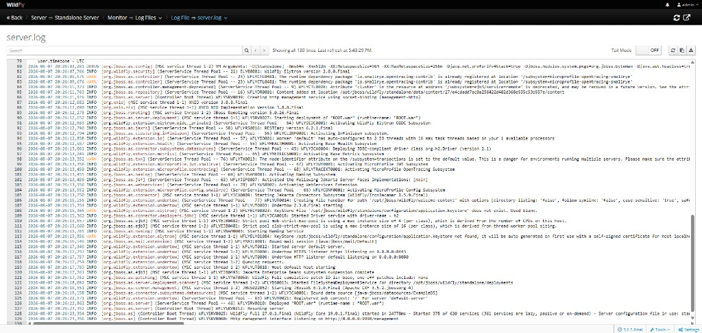

OpenShift Dev Spaces
Cloud IDE with the Trusted Profile Analyzer client — VS Code extension redhat.fabric8-analytics (RHDA) — plus a 3-command journey.
TL;DR: This sandbox demo shows how
Red Hat Lightwell Network
remediates vulnerable Java deps via Nexus on OpenShift — for architects and DevSecOps.
Expect ~15–20 minutes: open Dev Spaces, run three tasks, then compare image-scan CVEs vs Lightwell .rhlw coordinates (RHDA will not go “all green”).
The subtle point: Artifact Hub may flag stock commons-io in the WildFly
image scan,
while the app itself builds with Lightwell .rhlw via Nexus — two different planes, both honest.
Primary action — run the demo in the cloud IDE:
Lightwell remediates vulnerable Java deps; RHDA/TPA surfaces CVEs in the IDE;
Tekton builds through Nexus→Lightwell on OpenShift. Images land on
Quay (latest / contingency); GHCR is the public fallback.


.rhlw artifacts.


commons-io.

redhat.fabric8-analytics (RHDA / TPA) + Java pack; then run analyze-cves.

analyze-cves for RHDA on pom.xml.


Downloaded from maven-lightwell-validated — commons-io:2.11.0.rhlw-00001.

.rhlw POMs/JARs resolved from Nexus (checksum warn is expected).

latest / contingency / sha-… to Quay. GHCR is the public fallback.

demo-lightwell 0.2.2, jboss-app 0.1.3, nexus, devspaces-workspace.


commons-io:2.11.0 CVE in WildFly layers. CVE proof ↓

.rhlw deps — not an all-green zero-CVE badge.
How to run RHDA ↓
commons-io.

server.log: Deployed "ROOT.war" and WildFly started.
Official Red Hat technology icons (console.redhat.com) used for product recognition.
Cloud IDE with the Trusted Profile Analyzer client — VS Code extension redhat.fabric8-analytics (RHDA) — plus a 3-command journey.

Tekton pipeline builds the WAR via Nexus→Lightwell and deploys the JBoss/WildFly app.
Product page →
Primary release registry: GHA pushes latest / contingency to Quay (GHCR is the public fallback).
DevSpaces / Tekton → Nexus → Lightwell registry; GHA → Quay (GHCR fallback) → JBoss console.

settings.xmlThis is the enterprise-shaped piece of the demo: one service account on the proxy, many Maven clients that never see that credential. Understanding this boundary is the main “effort” the charts encode for you.
Secret lightwell-sa (username + JWT) is wired only into the Nexus configure Job.
Nexus stores it as HTTP basic auth on the Maven proxy remote, not in every developer laptop.
Tekton (and Dev Spaces) use a ConfigMap settings.xml that mirrors
* to http://nexus:8081/repository/maven-public/.
No Lightwell password in that file.
First resolve hits packages.redhat.com with the SA; later builds reuse blobs on the Nexus PVC
(contentMaxAge / metadataMaxAge = 1440 minutes).
lightwell.username / lightwell.token → Secret
lightwell-sa (charts/demo-lightwell/templates/secrets.yaml).
That is the only credential the fork must fill for the Nexus path.
charts/nexus/templates/configure-job.yaml) waits for the Nexus admin API,
then POST /service/rest/v1/repositories/maven/proxy for
maven-lightwell-validated with
remoteUrl = https://packages.redhat.com/api/pulp-content/public-lightwell-demo/java/validated/
and httpClient.authentication = the SA from lightwell-sa.
Layout policy is PERMISSIVE so S3-style redirects from the upstream work.
maven-public
Same Job PUTs the group so members are
maven-releases, maven-snapshots,
maven-lightwell-validated, maven-central.
One URL then covers Lightwell remediations and Central for plugins/transitive deps.
charts/demo-lightwell/templates/maven-settings-configmap.yaml creates
ConfigMap maven-settings-lightwell with key settings.xml:
override the default HTTP blocker, mirrorOf * → Nexus group,
checksumPolicy: warn (Lightwell often omits .sha1/.md5).
Deliberately no <servers> block for Lightwell.
maven-settings to the ConfigMap
(charts/demo-lightwell/templates/pipelinerun.yaml).
The Task sees $(workspaces.maven-settings.path)/settings.xml and runs
mvn -B -s "${SETTINGS}" package
(charts/demo-lightwell/templates/tekton-pipeline.yaml).
The step only injects LIGHTWELL_USERNAME for logs/readiness — Maven never receives the JWT.
Maven (Tekton task)
└─ -s /workspace/maven-settings/settings.xml
mirrorOf * → http://nexus:8081/repository/maven-public/
├─ maven-lightwell-validated → Lightwell (SA on remote) → cache on PVC
│ e.g. commons-io:2.11.0.rhlw-00001
└─ maven-central → plugins / non-Lightwell deps
Contrast — GitHub Actions contingency path (no Nexus):
renders app/settings-lightwell-direct.xml.template with SA in <servers>
and calls packages.redhat.com directly.Why this effort matters
Without the proxy + group + ConfigMap workspace pattern, every PipelineRun / Dev Spaces workspace would need the Lightwell JWT,
rotation would touch every client, and you would lose a shared on-cluster cache.
The charts encode the Red Hat–recommended shape: organization credential on Nexus,
anonymous in-cluster Maven clients, PVC-backed cache.
Proof in the journey: Tekton logs show
Downloaded from maven-lightwell-validated: … rhlw …
(see carousel steps 8b / 8c).
Key Red Hat ecosystem terms used in this demo.
redhat.fabric8-analytics). Scans your POM for CVEs and Red Hat remediations — a different plane from Artifact Hub image scans..rhlw suffix to address CVEs without waiting for upstream.commons-io:commons-io:2.11.0).Factory URL (OpenShift Dev Spaces / Developer Sandbox): workspaces.openshift.com/#…/demo-lightwell
helm upgrade --install demo charts/demo-lightwell … with Lightwell SA in values.
.rhda/.
Then open app/pom.xml and run Red Hat Dependency Analytics Report
(Command Palette, pie-chart icon, or right-click). The terminal alone never opens the HTML report.
Demo / sandbox only — not production credentials
Passwords below are ephemeral chart defaults for Developer Sandbox reproducibility.
They rotate when the sandbox expires, are unsuitable for any shared or production cluster, and are a
bad pattern to copy into real supply-chain work. Prefer generating secrets at install time
(helm … --set / sealed secrets) outside this demo.
Example live Routes from a Developer Sandbox project (ephemeral; your namespace and cluster host will differ).
Pattern: https://<route>-<namespace>.apps.<cluster>/.
Discover yours with oc get route -n <namespace>.
Management user comes from Secret jboss-admin (see chart / add-user.sh).
| Surface | Example URL pattern | Auth |
|---|---|---|
| App home | jboss-app-<ns>.apps.…/ · open example |
none |
| Health JSON | …/health · open example |
none — expect commons-io: 2.11.0.rhlw-00001 |
| HAL Management Console | jboss-app-mgmt-<ns>.apps.…/console · open example |
Secret jboss-admin (reveal below) |
| Nexus UI | nexus-<ns>.apps.…/ · open example |
chart demo admin (reveal below) |
Collapsed on purpose — bad practice to lead with secrets on a supply-chain page.
jboss-admin): admin / Admin#123admin / admin123
Prefer reading from the cluster when possible:
oc get secret jboss-admin -o jsonpath='{.data.password}' | base64 -d.
For your own installs, override with generated secrets — do not copy these values into production.
Use the management Route host (not the app Route). Leave the Route path empty so both
/console and /management work on the same host — a /console-only path breaks Bootstrap (503).
If the browser console shows /management 403 and “Authentication required” while Keycloak adapter is 404,
WildFly rejected the HAL Origin header. The chart sets MANAGEMENT_ALLOWED_ORIGINS to the management Route HTTPS URL
(http-interface allowed-origins). Keycloak 404 is expected — this demo uses local ManagementRealm digest auth, not Keycloak.

commons-io:2.11.0.rhlw-00001.
server.log:
Deployed "ROOT.war", web context /, WildFly started.
Use your own management Route after deploy (host and pod name vary per account).
The IDE plugin is Red Hat Dependency Analytics
(redhat.fabric8-analytics) — the VS Code client for
Trusted Profile Analyzer.
It is listed in .vscode/extensions.json and .che/extensions.json
so Dev Spaces installs it at workspace startup.
redhat.fabric8-analytics)..rhda/ report path).app/pom.xml → Command Palette → Red Hat Dependency Analytics Report.
Settings live in .vscode/settings.json
(redHatDependencyAnalytics.reportFilePath, backend URL, Maven -s .m2/settings.xml).
Full RHDA report screenshot is in the journey carousel (single copy on the page).
Green banner = remediations available; table may still list OSV Direct Vulnerabilities on .rhlw rows.
Three different signals — do not expect RHDA to go “all green” just because the pom uses
.rhlw from the validated demo tier.
quay.io/wildfly/wildfly:27.0.1…commons-io:2.11.0 in layers → CVE-2024-475542.11.0.rhlw-00001 GAVapp/pom.xml → Nexus → Lightwell validated demo…rhlw-00001 (not Maven Central stock)commons-io: 2.11.0.rhlw-00001| Tool | What it looks at | What you should see |
|---|---|---|
| Artifact Hub | Chart artifacthub.io/images (WildFly) |
CVEs on stock jars in the image (e.g. commons-io 2.11.0) |
| Nexus / health endpoint | Resolved Maven artifacts | 2.11.0.rhlw-00001 from Lightwell proxy |
| RHDA / TPA plugin (IDE) | Extension redhat.fabric8-analytics on pom.xml + OSV / remediations |
Still may show Direct Vulnerabilities on .rhlw rows and
“Red Hat Dependency Remediations available” (the green check) |
Screenshot of the Artifact Hub stock commons-io CVE lives in the journey
(avoids duplicating the same image here).
Why it is not all green
RHDA queries vulnerability databases (here rhtpa/osv-github).
Those databases often still associate CVEs with the upstream lineage even when you consume a
Lightwell .rhlw rebuild from the public validated demo catalog.
What Lightwell + RHDA add in this demo is: you are on Red Hat coordinates, and the report
surfaces remediation availability (see RHDA report).
Clearing every OSV finding is the product path
(subscription remediated tier + newer .rhlw-* builds), not a promise of the sandbox demo alone.
For deeper remediations with a subscription, see Day-2: remediated tier.
Each chart ships a README.md so Artifact Hub can render a full description.
Repo index: charts/ ·
search on Artifact Hub.
Umbrella: secrets, Nexus, JBoss, Tekton PipelineRun, optional DevWorkspace — one helm upgrade --install.
WildFly WAR + app Route + HAL console Route. Image scan on Artifact Hub uses the public WildFly base.
Artifact Hub →Thin Nexus + PVC; configure Job wires Lightwell proxy with SA on the remote into maven-public.
Also published: devspaces-workspace (DevWorkspace CR for GitOps-style IDE provisioning).
This sandbox defaults to the public validated Lightwell demo index. With an active Lightwell Network membership, switch Nexus + Maven to the remediated tier (org service account, product URL, layout Strict) and re-run RHDA + rebuild.
| Demo (default) | Subscription | |
|---|---|---|
| Tier | Validated (public pulp demo) | Remediated |
| URL | …/public-lightwell-demo/java/validated/ |
https://packages.redhat.com/lightwell/java/remediated/ |
| Expect in RHDA | OSV findings + remediations available | Newer .rhlw-* builds; fewer open findings as coverage grows |
SLSA + SBOM (production)
This demo focuses on Lightwell remediations and CVE visibility. Generating an SBOM and attaching SLSA build provenance (attestations, policy gates) is out of scope here, but should be planned for a production secure supply-chain.